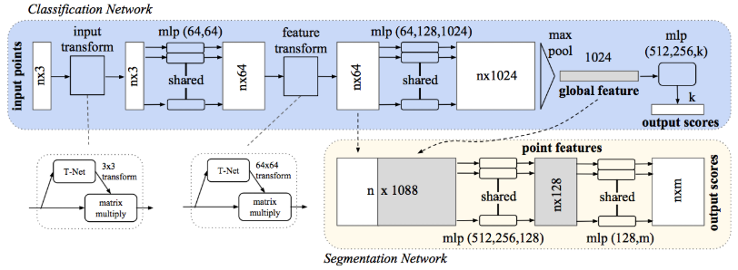

PointNet直接处理三维点云数据，而以往的方法必须先格式化点云数据。
直接处理三维点云数据有如下挑战：
- 无序性。点云只是点的集合，不论以什么顺序读入，都应该产生相同的结果
- RT不变性。点云整体经过平移旋转之后对结果应该没有影响
- 点的相关性。这个在分割中要考虑，分类则可以无视
针对挑战的解决方法
- 无序性：在网络的最后使用最大池化，这样不论怎么排列，取了最大都一样
- 不变性：使用T-Net对数据进行仿射变换。这个网络的输出是一个仿射变换矩阵，具体做了什么样的变换是学习到的。
架构

输入数量为n的3坐标点云，经过一个输入变换网络之后得到新的nx3张量。经过2层conv2d构造的mlp之后输出nx64张量，经过一个特征图变换网络后得到新的nx64张量，再输入到3层conv2d构成的mlp得到nx1024张量。经过最大池化后得到1024维向量，代表了点云的全局特征。这个向量经过3层fc后即可用softmax分类。